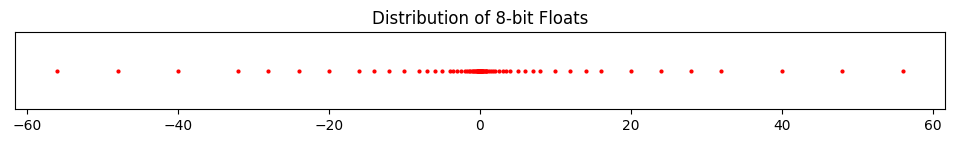

Code
import numpy as np
from utils.math_ml import *
import warnings
warnings.filterwarnings('ignore')In this lesson I’ll discuss the basics of numerical computation. This includes how numbers are represented on a computer, as well as the topics of arrays and vectorization, which is the use of efficient array operations to speed up computations.This may seem too basic to mention, but it’s actually very important. There’s a lot of subtlety involved. Let’s get started.
import numpy as np
from utils.math_ml import *
import warnings
warnings.filterwarnings('ignore')Recall the integers are whole numbers that can be positive, negative, or zero. Examples are 5, 100151, 0, -72, etc. The set of all integers is commonly denoted by the symbol \(\mathbb{Z}\).
In python, integers (ints for short) are builtin objects of type int that more or less follow the rules that integers in math follow.
Among other things, the following operations can be performed with integers:
* operator, e.g. 3 * 3 = 9** operator, e.g. 2 ** 3 = 8.% operator, e.g. 10 % 3 = 1.If any of these operations are applied to two integers, the output will itself always be an integer.
Here are a few examples.
print(f'2 + 2 = {2 + 2}')
print(f'2 - 5 = {2 - 5}')
print(f'3 * 3 = {3 * 3}')
print(f'10 % 3 = {10 % 3}')
print(f'2 ** 3 = {2 ** 3}')2 + 2 = 4
2 - 5 = -3
3 * 3 = 9
10 % 3 = 1
2 ** 3 = 8What about division? You can’t always divide two integers and get another integer. What you have to do instead is called integer division. Here you divide the two numbers and then round the answer down to the nearest whole number. Since \(5 \div 2 = 2.5\), the nearest rounded down integer is 2.
In math, this “nearest rounded down integer” 2 is usually called the floor of 2.5, and represented with the funny symbol \(\lfloor 2.5 \rfloor.\) Using this notation we can write the above integer division as \[\big\lfloor \frac{5}{2} \big\rfloor = 2.\]
In python, integer division is done using the // operator, e.g. 5 // 2 = 2. I’ll usually write \(5 \ // \ 2\) instead of \(\big\lfloor \frac{5}{2} \big\rfloor\) when it makes sense, \[5 \ // \ 2 = \big\lfloor \frac{5}{2} \big\rfloor = 2.\]
print(f'5 // 2 = {5 // 2}')5 // 2 = 2We can also do regular division / with ints, but the output will not be an integer even if the answer should be, e.g. 4 / 2. Only integer division is guaranteed to return an integer. I’ll get to this shortly.
print(f'4 / 2 = {4 / 2}')
print(f'type(4 / 2) = {type(4 / 2)}')4 / 2 = 2.0
type(4 / 2) = <class 'float'>print(f'4 // 2 = {4 // 2}')
print(f'type(4 // 2) = {type(4 // 2)}')4 // 2 = 2
type(4 // 2) = <class 'int'>Division by zero is of course undefined for both division and integer division. In python it will always raise a ZeroDivisionError like so.
print(f'4 / 0 = {4 / 0}')ZeroDivisionError: division by zeroprint(f'4 // 0 = {4 // 0}')ZeroDivisionError: integer division or modulo by zeroJust like every other data type, on a computer integers are actually represented internally as a sequence of bits. A bit is a “binary digit”, 0 or 1. A sequence of bits is just a sequence of zeros and ones, e.g. 0011001010 or 1001001.
The number of bits used to represent a piece of data is called its word size. If we use a word size of \(n\) bits to represent an integer, then there are \(2^n\) possible integer values we can represent.
If integers could only be positive or zero, representing them with bits would be easy. We could just convert them to binary and that’s it. To convert a non-negative integer to binary, we just need to keep dividing it by 2 and recording its remainder (0 or 1) at each step. The binary form is then just the sequence of remainders, written right to left. More generally, the binary sequence of some arbitrary number \(x\) is the sequence of coefficients \(b_k=0,1\) in the sum
\[x = \sum_{k=-\infty}^\infty b_k 2^k = \cdots + b_2 2^2 + b_1 2^1 + b_0 2^0 + b_{-1} 2^{-1} + b_{-2} 2^{-2} + \cdots.\]
Here’s an example. Suppose we wanted to represent the number \(12\) in binary.
So the binary representation of \(12\) is \(1100\), which is the sequence of coefficients in the sum
\[12 = 1 \cdot 2^{3} + 1 \cdot 2^{2} + 0 \cdot 2^{1} + 0 \cdot 2^{0}.\]
Rather than keep doing these by hand, you can quickly convert a number to binary in python by using bin. It’ll return a string representing the binary sequence of that number, prepended with the special prefix 0b. To get back to the integer from, use int, passing in a base of 2.
print(f'bin(12) = {bin(12)}')
print(f"int('0b110', 2) = {int('0b110', 2)}")bin(12) = 0b1100
int('0b110', 2) = 6This representation works fine for non-negative integers, also called the unsigned integers in computer science. To represent an unsigned integer with \(n\) bits, just get its binary form and prepend it with enough zeros on the left until all \(n\) bits are used. For example, if we used 8-bit unsigned integers then \(n=8\), hence representing the number \(12\) would look like \(00000110\). Simple, right?
Unsigned ints work fine if we never have to worry about negative numbers. But in general we do. These are called the signed integers in computer science. To represent signed ints, we need to use one of the bits to represent the sign. What we can do is reserve the left-most bit for the sign, \(0\) if the integers is positive or zero, \(1\) if the integer is negative.
For example, if we used 8-bit signed integers to represent \(12\), we’d again write \(00000110\), exactly as before. But this time it’s understood that left-most \(0\) is encoding the fact that \(12\) is positive. If instead we wanted to represent the number \(-12\) we’d need to flip that bit to a \(1\), so we’d get \(10000110\).
Let’s now do an example of a simple integer system. Consider the system of 4-bit signed ints. In this simple system, \(n=4\) is the word size, and an integer \(x\) is represented with the sequence of bits
\[x \equiv sb_1b_2b_3,\]
where \(s\) is the sign bit and \(b_1b_2b_3\) are the remaining 3 bits allowed to represent the numerical digits. This system can represent \(2^4=16\) possible values in the range \([-2^3+1,2^3-1] = [-8,7]\), given in the following table:
| Integer | Representation | Integer | Representation |
|---|---|---|---|
| -0 | 1000 | +0 | 0000 |
| -1 | 1001 | 1 | 0001 |
| -2 | 1010 | 2 | 0010 |
| -3 | 1011 | 3 | 0011 |
| -4 | 1100 | 4 | 0100 |
| -5 | 1101 | 5 | 0101 |
| -6 | 1110 | 6 | 0110 |
| -7 | 1111 | 7 | 0111 |
Note the presence of \(-0 \equiv 1110\) in the upper left. This is because the system as I’ve defined it leaves open the possibility of two zeros, \(+0\) and \(-0\), since for zero the sign bit is redundant. A way to get around this is to encode the negative numbers slightly differently, by not just setting the sign bit to one, but also inverting the remaining bits and subtracting one from them. This is called the two’s complement representation. It’s how most languages, including python, actually represent integers. I won’t go into this representation in any depth, except to say that it gets rid of the need for \(-0\) and replaces it with \(-2^{n-1}\).
Here’s what that table looks like for 4-bit integers. It’s almost the same, except there’s no \(-0\), instead a \(-8\). Notice the positive integers look exactly the same. It’s only the negative integers that look different. For them, the right three bits get inverted and added with a one.
| Integer | Two’s Complement | Integer | Two’s Complement |
|---|---|---|---|
| -1 | 1111 | 0 | 0000 |
| -2 | 1110 | 1 | 0001 |
| -3 | 1101 | 2 | 0010 |
| -4 | 1100 | 3 | 0011 |
| -5 | 1011 | 4 | 0100 |
| -6 | 1010 | 5 | 0101 |
| -7 | 1001 | 6 | 0110 |
| -8 | 1000 | 7 | 0111 |
It’s worth visualizing what integers look like on the number line, if for nothing else than to compare it with what floats look like later on. Below I’ll plot what a 6-bit signed integer system would look like. Such a system should go from -32 to 31. As you’d expect, we get a bunch of equally spaced points from -32 to 31.
n = 6
six_bit_ints = range(-2**(n-1), 2**(n-1))
plot_number_dist(six_bit_ints, title=f'Distribution of {n}-bit Signed Ints')
In python, integers are represented by default using a much bigger word size of \(n=64\) bits, called long integers, or int64 for short. This means (using two’s complement) we can represent \(2^{64}=18446744073709551616\) possible integer values in the range \([-2^{63}, 2^{63}-1]\).
You can see from this that 64-bit integers have a minimum integer allowed and a maximum integer allowed, which are
\[\text{min\_int}=-2^{63}=-9223372036854775808, \qquad \text{max\_int}=2^{63}-1=9223372036854775807.\]
What I’ve said is technically only exactly true in older versions of pythons as well as other programming languages like C. It turns out newer versions of python have a few added tricks that allow you to represent essentially arbitrarily large integers. You can see this by comparing it to numpy’s internal int64 representation, which uses the C version. A numpy int64 outside the valid range will throw an overflow error.
min_int = -2 ** 63
max_int = 2 ** 63 - 1print(f'min_int - 1 = {min_int - 1}')
print(f'min_int = {np.int64(min_int - 1)}')min_int - 1 = -9223372036854775809OverflowError: Python int too large to convert to C longprint(f'max_int + 1 = {min_int + 1}')
print(f'max_int = {np.int64(min_int + 1)}')max_int + 1 = -9223372036854775807
max_int = -9223372036854775807What if we want to represent decimal numbers or fractions instead of whole numbers, like \(1.2\) or \(0.99999\), or even irrational numbers like \(\pi=3.1415926\dots\)? To do this we need a new system of numbers that I’ll call floating point numbers, or floats, for reasons I’ll explain soon. Floats will be a computer’s best attempt to represent the real numbers \(\mathbb{R}\). They’ll represent real numbers only approximately with some specified precision.
In python, floats are builtin objects of type float. Floats obey pretty much the same operations that integers do with some minor exceptions:
Let’s verify the first few of these to see what’s going on.
print(f'1.2 + 4.3 = {1.2 + 4.3}')
print(f'1.2 - 4.3 = {1.2 - 4.3}')
print(f'1.2 * 4.3 = {1.2 * 4.3}')1.2 + 4.3 = 5.5
1.2 - 4.3 = -3.0999999999999996
1.2 * 4.3 = 5.159999999999999Most of them look right. But what the heck is going on with \(1.2 - 4.3\) and \(1.2 \times 4.3\)? We’re getting some weird trailing nines that shouldn’t be there. This gets to how floats are actually represented on a computer.
Representing real numbers on a computer is a lot more subtle than representing integers. Since a computer can only have a finite number of bits, they can’t represent infinitely many digits, e.g. in irrational numbers like \(\pi\). Using finite word sizes will necessarily have to truncate real numbers to some number of decimal places. This truncation will create an error in the calculation called numerical roundoff.
So how should we represent a decimal number using \(n\) bits? As an example, let’s imagine we’re trying to represent the number \(x=157.208\). Perhaps the first thing you might think of is to use some number of those bits to represent the integer part, and some number to represent the fractional part. Suppose you have \(n=16\) bits available to represent \(x\). Then maybe you can use 8 bits for the integer part \(157\), and 8 bits for the fractional part \(0.208\). Converting both halves to binary, you’d get \[157 \equiv 10011101, \quad 0.208 \equiv 0011010100111111.\]
Truncating both sequences to 8 bits (from the left), you could thus adopt a convention that \(157.208 \equiv 10011101 \ 00110101\).
This system is an example of a fixed point representation. This has to do with the fact that we’re always using a fixed number of bits for the integer part, and a fixed number for the fractional part. The decimal point isn’t allowed to float, or move around to allocate more bits to the integer or fractional part depending which needs more precision. The decimal point is fixed.
As I’ve suggested, the fixed point representation seems to be limited and not terribly useful. If you need really high precision in the fractional part, your only option is to use a larger word size. If you’re dealing with really big numbers and don’t care much about the fractional part, you also need a larger word size so you don’t run out of numbers. A solution to this problem is to allow the decimal point to float. We won’t allocate a fixed number of bits to represent the integer or fractional parts. We’ll design it in such a way that larger numbers give the integer part more bits, and smaller numbers give the fractional part more bits.
The trick to allowing the decimal point to float is to represent not just the digits of a number but also its exponent. Think about scientific notation, where if you have a number like say \(x=1015.23\), you can write it as \(1.01523 \cdot 10^3\), or 1.01523e3. That \(3\) is the exponent. It says something about how big the number is. What we can do is convert a number to scientific notation. Then use some number of bits to represent the exponent \(3\) and some to represent the remaining part \(1.01523\). This is essentially the whole idea behind floating point.
In floating point representation, instead of using scientific notation with powers of ten, it’s more typical to use powers of two. When using powers of two, the decimal part can always be scaled to be between 1 and 2, so they look like \(1.567\) or something like that. Since the \(1.\) part is always there, we can agree it’s always there, and only worry about representing the fractional part \(0.567\). We’ll call this term the mantissa. Denoting the sign bit as \(s\), the exponent as \(e\), and the mantissa as \(m\), we can thus right any decimal number \(x\) in a modified scientific notation of the form \[x = (-1)^s \cdot (1+m) \cdot 2^{e}.\] Once we’ve converted \(x\) to this form, all we need to do is to figure out how to represent \(s\), \(m\), and \(e\) using some number of bits of \(n\), called the floating point precision. Assume the \(n\) bits of precision allocate \(1\) bit for the sign, \(n_e\) bits for the exponent, and \(n_m\) bits for the mantissa, so \(n=1+n_e+n_m\).
Here are the steps to convert a number \(x\) into its \(n\)-bit floating point representation.
There are of course other ways you could do it, for example by storing the sequences in a different order. I’m just stating one common way it’s done.
Since all of this must seem like Greek, here’s a quick example. Let’s consider the number \(x=15.25\). We’ll represent it using \(n=8\) bits of precision, where \(n_e=4\) is the number of exponent bits, \(n_m=3\) is the number of precision bits, and \(b=10\) is the bias.
Below I show the example I just calculated. I print out both the scientific notation form and its binary representation.
represent_as_float(15.25, n=8, n_exp=4, n_man=3, bias=10)scientific notation: (-1)^0 * (1 + 0.90625) * 2^3
8-bit floating point representation: 0 1101 111So what’s going on with the bias term \(b\)? Why do we need it? The easiest answer to give is that without it, we can’t have negative exponents without having to use another sign bit for them. Consider a number like \(x=0.5\). In modified scientific notation this would look like \(x=(-1)^0 \cdot (1+0) \cdot 2^{-1} = 2^{-1}\), meaning its exponent would be \(e=-1\). Rather than have to keep yet another sign bit for the exponent, it’s easier to just add a bias term \(b\) that ensures the exponent \(e'=e+b\) is always non-negative. The higher the bias, the more precision we can show in the range \(-1 < x < 1\). The trade-off is that we lose precision for large values of \(x\).
On top of floats defined the way I mentioned, we also have some special numbers that get defined in a floating point system. These are \(\pm 0\), \(\pm \infty\), and \(\text{NaN}\) or “not a number”. Each of these numbers is allocated its own special sequence of bits, depending on the precision.
So I can illustrate some points about how floating point numbers behave, I’m going to generate all possible \(8\)-bit floats (excluding the special numbers) and plot them on a number line, similar to what I did above with the \(8\)-bit signed integers. I’ll generate the floats using the using the helper function gen_all_floats, passing in the number of mantissa bits n_man=3, the number of exponent bits n_exp=4, and a bias of bias=10.
First, I’ll use these numbers to print out some interesting statistics of this 8-bit floating point system.
eight_bit_floats = gen_all_floats(n=8, n_man=3, n_exp=4, bias=10)
print(f'Total number of 8-bit floats: {len(eight_bit_floats)}')
print(f'Most negative float: {min(eight_bit_floats)}')
print(f'Most positive float: {max(eight_bit_floats)}')
print(f'Smallest nonzero float: {min([x for x in eight_bit_floats if x > 0])}')
print(f'Machine Epsilon: {min([x for x in eight_bit_floats if x > 1]) - 1}')Total number of 8-bit floats: 120
Most negative float: -56.0
Most positive float: 56.0
Smallest nonzero float: 0.001953125
Machine Epsilon: 0.25We can see that this 8-bit system only contains 120 unique floats. We could practically list them all out. Just like with the integers, we see there’s a most negative float, \(-56.0\), and a most positive float, \(56.0\). The smallest float, i.e. the one closest to \(0\), is \(0.001953125\). Notice how much more precision the smallest float has than the largest ones do. The largest ones are basically whole numbers, while the smallest one has nine digits of precision. Evidently, floating point representations give much higher precision to numbers close to zero than to numbers far away from zero.
What happens if you try to input a float larger than the max, in this case \(56.0\)? Typically it will overflow. This will result in either the system raising an error, or the number getting set to \(+\infty\), in a sense getting “rounded up”. Similarly, for numbers more negative than the min, in this case \(-56.0\), either an overflow error will be raised, or the number will get “rounded down” to \(-\infty\).
You have to be careful in overflow situations like this, especially when you don’t know for sure which of these your particular system will do. It’s amusing to note that python will raise an overflow error, but numpy will round to \(\pm \infty\). Two different conventions to worry about. Just as amusing, when dealing with signed integers, it’s numpy that will raise an error if you overflow, while python won’t care. One of those things…
What happens when you try to input a float smaller than the smallest value, in this case \(0.001953125\)? In this case, the number is said to undeflow. Usually underflow won’t raise an error. The number will pretty much always just get set to \(+0\) (or \(-0\)). This is again something you have to worry about, especially if you’re dealing with small numbers in denominators, where they can lead to division by zero errors which do get raised.
Overflow and underflow errors are some of the most common numerical bugs that occur in deep learning, and usually result from not handling floats correctly to begin with.
I also printed out a special value called the machine epsilon. The machine epsilon, denoted \(\varepsilon_m\), is defined as the smallest value in a floating point system that’s larger than \(1\). In some sense, \(\varepsilon_m\) is a proxy for how finely you can represent numbers in a given \(n\)-bit floating point system. The smaller \(\varepsilon_m\) the more precisely you can represent numbers, i.e. the more decimal places of precision you get access to. In our case, we get \(\varepsilon_m=0.25\). This means numbers in 8-bit floating point tend to be \(0.25\) apart from each other on average, which means we can represent numbers in this system only with a measly 2-3 digits of precision.
With these numbers in hand let’s now plot their distribution on the number line. Compare with the plot of the signed integers I did above.
plot_number_dist(eight_bit_floats, title='Distribution of 8-bit Floats')
Notice how different this plot is from the ones for the signed integers. With the integers, the points were equally spaced. Now points close to \(0\) are getting represented much closer together than points far from \(0\). There are \(74\) of the \(120\) total points showing up just in the range \([-1,1]\). That’s over half!. Meanwhile, only \(22\) points total show up in the combined ranges of \([-60,-10]\) and \([10,60]\). Very strange.
Feel free to play around with different floating point systems by using different choices for n, n_man, n_exp, and bias. Be careful, however, not to make n_exp too large or you may crash the kernel…
So how does python represent floats? Python by default uses what’s called double precision to represent floats, also called float64. This means \(n=64\) total bits of precision are used, with \(n_e=11\), \(n_m=52\), and bias \(b=1023=2^{10}-1\). Double precision allows for a much larger range of numbers than 8-bit precision does:
To illustrate the point regarding numerical roundoff, here’s what happens if we try to use double precision floating point to define the constant \(\pi\) to its first 100 digits? Notice it just gets truncated to its first 15 digits. Double precision is unable to keep track of the other 85 digits. They just get lost to numerical roundoff.
pi = 3.141592653589793238462643383279502884197169399375105820974944592307816406286208998628034825342117068
print(f'pi = {pi}')pi = 3.141592653589793Another thing to worry about is adding small numbers to medium to large sized numbers, e.g. \(10 + 10^{-16}\), which will just get rounded down to \(10.0\).
print(f'10.0 + 1e-16 = {10.0 + 1e-16}')10.0 + 1e-16 = 10.0Numerical roundoff is often an issue when subtracting two floats. Here’s what happens when we try to subtract two numbers that should be equal, \(x=0.1+0.2\) and \(y=0.3\). Instead of \(y-x=0\), we get \(y-x \approx -5.55 \cdot 10^{-17}\). The problem comes from the calculation \(x=0.1+0.2\), which caused a slight loss of precision in \(x\).
x = 0.1 + 0.2
y = 0.3
print(f'y-x = {y - x}')y-x = -5.551115123125783e-17A major implication of these calculations is that you should never test floating points for exact equality because numerical roundoff can mess it up. If you’d tried to test something like (y - x) == 0.0, you’d have gotten the wrong answer. Instead, you want to test that y - x is less than some small number tol, called a tolerance, i.e. abs(y - x) < tol.
tol = 1e-5
print(f'(y - x == 0.0) = {y - x == 0.0}')
print(f'(abs(y - x) < tol) = {abs(y - x) < tol}')(y - x == 0.0) = False
(abs(y - x) < tol) = TrueNumerical roundoff explains why we got the weird results above when subtracting \(1.2 - 4.3\). The imperfect precision in the two numbers resulted in a numerical roundoff error, leading in the trailing \(9\)s that should’ve rounded up to \(-3.1\) exactly. In general, subtracting floats is one of the most dangerous operations to do, as it tends to lead to the highest loss of precision in calculations. The closer two numbers are to being equal the worse this loss of precision tends to get.
I mentioned that double precision has a smallest number of \(2^{-1022} \approx 10^{-308}\), but caveated that by saying that, by using a trick called subordinal numbers, we can get the smallest number down to about \(10^{-324}\). What did I mean by this? It turns out that the bits where the biased exponent \(e'=0\) (i.e. all exponent bits are zero) go mostly unused in the standard version of double precision. By using this zero exponent and allowing the mantissa \(m\) to take on all its possible values, we can get about \(2^{52}\) more values (since the mantissa has 52 bits). This lets us get all the way down to \(2^{-1022} \cdot 2^{-52} = 2^{-1074} \approx 10^{-324}\).
Python (and numpy) by default implements double precision with subordinal numbers, as we can see.
print(f'2 ** (-1074) = {2 ** (-1074)}')
print(f'2 ** (-1075) = {2 ** (-1075)}')2 ** (-1074) = 5e-324
2 ** (-1075) = 0.0The special numbers \(\pm \infty\), \(\pm 0\), and \(\text{NaN}\) are also defined in double precision. In python (and numpy) they’re given by the following commands,
float('inf') or np.inf,float('-inf') or -np.inf,0,float('nan') or np.nan.print(f"float('inf') = {float('inf')}")
print(f'np.inf = {np.inf}')
print(f"float('-inf') = {float('-inf')}")
print(f'-np.inf = {-np.inf}')
print(f'0 = {0}')
print(f'-0 = {-0}')
print(f"float('nan') = {float('nan')}")
print(f'np.nan = {np.nan}')float('inf') = inf
np.inf = inf
float('-inf') = -inf
-np.inf = -inf
0 = 0
-0 = 0
float('nan') = nan
np.nan = nanYou may be curious what exactly \(\text{NaN}\) (“not a number”) is and where it might show up. Basically, NaNs are used wherever values are undefined. Anytime an operation doesn’t return a sensible value it risks getting converted to NaN. One example is the operation \(\infty - \infty = \infty + (-\infty)\), which mathematically doesn’t make sense. No, it’s not zero…
print(f"float('inf') + float('-inf') = {float('inf') + float('-inf')}")
print(f'np.inf - np.inf = {np.inf - np.inf}')float('inf') + float('-inf') = nan
np.inf - np.inf = nanI’ll finish this section by mentioning that there are two other floating point representations worth being aware of: single precision (or float32), and half precision (or float16). Single precision uses 32 bits to represent a floating point number. Half precision uses 16 bits. It may seem strange to even bother having these less-precise precisions lying around, but they do have their uses. For example, half precision shows up in deep learning as a more efficient way to represent the weights of a neural network. Since half precision floats only take up 25% as many bits as default double precision floats do, using them can yield a 4x reduction in model memory sizes. We’ll see more on this later.
To cap this long section on floats, here’s a list of common pitfalls people run into when working with floating point numbers, and some ways to avoid each one. This is probably the most important thing to take away from this section. You may find it helpful to reference later on. See this post for more information.
x == y, test for approximate equality with something like abs(x - y) <= tolnp.allclose(x, y), which will do this for youlog_factorial or log_softmaxIn machine learning and most of scientific computing we’re not interested in operating on just single numbers at a time, but many numbers at a time. This is done using array operations. The most popular library in python for doing numerical computation on arrays is numpy.
Why not just do numerical computations in base python? After all, if we have large arrays of data we can just put them in a list. Consider the following example. Suppose we have two tables of data, \(\mathbf{A}\) and \(\mathbf{B}\). Each table has \(m=5\) rows and \(n=3\) columns. The rows represent samples, e.g. measured in a lab, and the columns represent the variables, or features, being measured, call them \(x\), \(y\), and \(z\), if you like. I’ll define these two tables using python lists A and B below.
A = [[3.5, 18.1, 0.3],
[-8.7, 3.2, 0.5],
[-1.3, 8.4, 0.2],
[5.6, 12.9, 0.9],
[-6.8, 19.7, 0.7]]
B = [[-9.7, 12.5, 0.1],
[-5.1, 14.1, 0.6],
[-1.6, 3.7, 0.7],
[2.3, 19.3, 0.9],
[8.2, 9.7, 0.2]]Suppose we wanted to add the elements in these two tables together, index by index, like this,
\[ \begin{bmatrix} A[0][0] + B[0][0], & A[0][1] + B[0][1], & A[0][2] + B[0][2] \\ A[1][0] + B[1][0], & A[1][1] + B[1][1], & A[1][2] + B[1][2] \\ A[2][0] + B[2][0], & A[2][1] + B[2][1], & A[2][2] + B[2][2] \\ A[3][0] + B[3][0], & A[3][1] + B[3][1], & A[3][2] + B[3][2] \\ A[4][0] + B[4][0], & A[4][1] + B[4][1], & A[4][2] + B[4][2] \\ \end{bmatrix}. \]
If we wanted to do this in python, we’d have to loop over all rows and columns and place the sums one-by-one inside an array \(\mathbf{C}\), like this.
def add_arrays(A, B):
n_rows, n_cols = len(A), len(A[0])
C = []
for i in range(n_rows):
row = []
for j in range(n_cols):
x = A[i][j] + B[i][j]
row.append(x)
C.append(row)
return C
C = add_arrays(A, B)
print(f'C = {np.array(C).round(2).tolist()}')C = [[-6.2, 30.6, 0.4], [-13.8, 17.3, 1.1], [-2.9, 12.1, 0.9], [7.9, 32.2, 1.8], [1.4, 29.4, 0.9]]Numpy makes this far easier to do. It implements element-wise array operatations, which allow us to operate on arrays with far fewer lines of code. In numpy, to perform the same adding operation we just did, we’d just add the two arrays together directly, \(\mathbf{A}+\mathbf{B}\).
To use numpy operations we have to convert data into the native numpy data type, the numpy array. Do this by wrapping lists inside the function np.array. Once we’ve done this, we can just add them together in one line. This will simultaneously element-wise add the elements in the array so we don’t have to loop over anything.
A = np.array(A)
B = np.array(B)
print(f'C = \n{A+B}')C =
[[ -6.2 30.6 0.4]
[-13.8 17.3 1.1]
[ -2.9 12.1 0.9]
[ 7.9 32.2 1.8]
[ 1.4 29.4 0.9]]This is really nice. We’ve managed to reduce a double foor loop of 8 lines of code down to just 1 line with no loops at all. Of course, there are loops happening in the background inside the numpy code, we just don’t see them.
Numpy lets us do this with pretty much any arithmetic operation we can think of. We can element-wise add, subtract, multiply, or divide the two arrays. We can raise them to powers, exponentiate them, take their logarithms, etc. Just like we would do so with single numbers. In numpy, arrays become first class citizens, treated on the same footing as the simpler numerical data types int and float. This is called vectorization.
Here are a few examples of different vectorized functions we can call on A and B. All of these functions are done element-wise.
print(f'A - B = \n{A-B}')
print(f'A / B = \n{A / B}')
print(f'A ** B = \n{A ** B}')
print(f'np.sin(A) = \n{np.sin(A)}')A - B =
[[ 13.2 5.6 0.2]
[ -3.6 -10.9 -0.1]
[ 0.3 4.7 -0.5]
[ 3.3 -6.4 0. ]
[-15. 10. 0.5]]
A / B =
[[-0.36082474 1.448 3. ]
[ 1.70588235 0.22695035 0.83333333]
[ 0.8125 2.27027027 0.28571429]
[ 2.43478261 0.66839378 1. ]
[-0.82926829 2.03092784 3.5 ]]
A ** B =
[[5.27885788e-06 5.25995690e+15 8.86568151e-01]
[ nan 1.32621732e+07 6.59753955e-01]
[ nan 2.62925893e+03 3.24131319e-01]
[5.25814384e+01 2.71882596e+21 9.09532576e-01]
[ nan 3.60016490e+12 9.31149915e-01]]
np.sin(A) =
[[-0.35078323 -0.68131377 0.29552021]
[-0.66296923 -0.05837414 0.47942554]
[-0.96355819 0.85459891 0.19866933]
[-0.63126664 0.32747444 0.78332691]
[-0.49411335 0.75157342 0.64421769]]If vectorization just made code easier to read it would be a nice to have. But it’s more than this. In fact, vectorization also makes your code run much faster in many cases. Let’s see an example of this. I’ll again run the same operations above to add two arrays, but this time I’m going to profile the code in each case. That is, I’m going to time each operation over several runs and average the times. The ones with the lowest average time is faster than the slower one, obviously. To profile in a notebook, the easiest way is to use the %timeit magic command, which will do all this for you.
A = A.tolist()
B = B.tolist()
%timeit C = add_arrays(A, B)2.58 µs ± 7.26 ns per loop (mean ± std. dev. of 7 runs, 100,000 loops each)A = np.array(A)
B = np.array(B)
%timeit C = A + B412 ns ± 1.1 ns per loop (mean ± std. dev. of 7 runs, 1,000,000 loops each)Even with these small arrays the numpy vectorized array addition is almost 10 times faster than the python loop array addition. This difference becomes much more pronounced when arrays are larger. The arrays just considered are only of shape \((10,3)\). We can easily confirm this in numpy using the methods A.shape and B.shape.
print(f'A.shape = {A.shape}')
print(f'B.shape = {B.shape}')A.shape = (5, 3)
B.shape = (5, 3)Let’s try to run the add operations on much larger arrays of shape \((10000,100)\). To do this quickly I’ll use np.random.rand(shape), which will sample an array with shape shape whose values are uniformly between 0 and 1. More on sampling in a future lesson. Running the profiling, we’re now running about 100 times faster using numpy vectorization compared to python loops.
D = np.random.rand(10000, 100)
E = np.random.rand(10000, 100)D = D.tolist()
E = E.tolist()
%timeit F = add_arrays(D, E)118 ms ± 876 µs per loop (mean ± std. dev. of 7 runs, 10 loops each)D = np.array(D)
E = np.array(E)
%timeit F = D + E1.21 ms ± 32.7 µs per loop (mean ± std. dev. of 7 runs, 1,000 loops each)So why is numpy vectorization so much faster than using native python loops? Because it turns out that numpy by and large doesn’t actually perform array operations in python! When array operations are done, numpy compiles them down to low-level C code and runs the operations there, where things are much faster.
Not only that, numpy takes advantage of very efficient linear algebra functions written over the course of decades by smart people. These functions come from low-level FORTRAN and C libraries like BLAS and LAPACK. They’re hand-designed to take maximum advantage of computational speed-ups where available. These include things like parallelization, caching, and hardware vectorization operations. Native python doesn’t take advantage of any of these nice things. The moral is, if you want to run array operations efficiently, you need to use a numerical library like numpy or modern variants like pytorch.
The length of the shape of an array is called its dimension or rank. The arrays I showed above are examples of rank-2 or 2-dimensional arrays. We can define arrays with any number of dimensions we like. These arrays of different rank sometimes have special names:
Here are some examples so you can see what they look like. Note I’m using dtype=np.float64 to explicitly cast the values as float64 when defining the arrays. Numpy’s vectorization operations work for all of these arrays regardless of their shape.
scalar = np.float64(5)
print(f'scalar = {scalar}') # 0-dimensionalscalar = 5.0vector = np.array([1, 2, 3], dtype=np.float64)
print(f'vector.shape = {vector.shape}')
print(f'vector = {vector}')vector.shape = (3,)
vector = [1. 2. 3.]matrix = np.array([[1, 2, 3], [4, 5, 6]], dtype=np.float64)
print(f'matrix.shape = {matrix.shape}')
print(f'matrix = \n{matrix}')matrix.shape = (2, 3)
matrix =
[[1. 2. 3.]
[4. 5. 6.]]tensor = np.array([[[1, 2], [3, 4]], [[5, 6], [7, 8]]], dtype=np.float64)
print(f'tensor.shape = {tensor.shape}')
print(f'tensor = \n{tensor}')tensor.shape = (2, 2, 2)
tensor =
[[[1. 2.]
[3. 4.]]
[[5. 6.]
[7. 8.]]]Numpy also supports array aggregation operations as well. Suppose you have a matrix A and want to get the sum of the values in each row of A. To do this, you could use np.sum(A, axis=1), where axis is the index of the dimension you want to sum over (the columns in this case). This will return a vector where the value at index \(i\) is the sum of elements in row \(i\). To sum over all elements in the array, don’t pass anything to axis.
A = np.array([[1, 2, 3], [-1, -2, -3], [1, 0, -1]], dtype=np.float64)
print(f'A = \n{A}')
print(f'sum over all A = {np.sum(A)}')
print(f'row sums of A = {np.sum(A, axis=1)}')A =
[[ 1. 2. 3.]
[-1. -2. -3.]
[ 1. 0. -1.]]
sum over all A = 0.0
row sums of A = [ 6. -6. 0.]Indexing into numpy arrays like A is more powerful than with python lists. Instead of having to awkwardly index like A[1][0], write A[1, 0]. To get all values in column index 1, write A[:, 1]. To get just the first and last row, we could just pass the index we want in as a list like this, A[[0, -1], :].
print(f'A[1, 0] = {A[1][0]} = {A[1, 0]}')A[1, 0] = -1.0 = -1.0print(f'col 1 of A = {A[:, 1]}')
print(f'rows 0 and -1 of A = \n{A[[0, -1], :]}')col 1 of A = [ 2. -2. 0.]
rows 0 and -1 of A =
[[ 1. 2. 3.]
[ 1. 0. -1.]]Numpy also supports Boolean masks as indexes. Suppose we want to get all the positive elements x >= 0 in A. We could create a mask A > 0, and pass that into A as an index to pick out the positive elements only.
print(f'mask of (A >= 0) = \n{(A >= 0)}')
print(f'elements of (A >= 0) = \n{A[A >= 0]}')mask of (A >= 0) =
[[ True True True]
[False False False]
[ True True False]]
elements of (A >= 0) =
[1. 2. 3. 1. 0.]Broadcasting is a set of conventions for doing array operations on arrays with incompatible shapes. This may seem like a strange thing to do, but it turns out knowing how and when to broadcast can make your code much shorter, more readable, and efficient. All modern-day numerical libraries in python support broadcasting, including numpy, pytorch, tensorflow, etc. So it’s a useful thing to learn.
Let’s start with a simple example. Suppose we have an array of floats defined below. We’d like to add 1 to every number in the array. How can we do it? One “pythonic” way might be to use a list comprehension like so. This will work just fine, but it requires going back and forth between arrays and lists.
x = np.array([1., 2., 3., 4., 5.])
print(f'x = {x}')
x_plus_1 = np.array([val + 1 for val in x])
print(f'x + 1 = {x_plus_1}')x = [1. 2. 3. 4. 5.]
x + 1 = [2. 3. 4. 5. 6.]What if we didn’t want to go back and forth like that? It is slow after all. Anytime numpy has to handoff back to python or vice versa it’s going to slow things down. Another thing we could try is to make a vector of ones of the same size as x, then add it to x. This is also fine, but it requires defining this extra array of ones just to add 1 to the original array.
ones = np.ones(len(x))
x_plus_1 = x + ones
print(f'x + 1 = {x_plus_1}')x + 1 = [2. 3. 4. 5. 6.]We’d like to be able to just add 1 to the array like we would with numbers. If x were a single number we’d just write x + 1 to add one to it, right? But technically we can’t do this if x is an array, since x has shape (5,) and 1 is just a number with no shape. This is where broadcasting comes in. Broadcasting says let’s define the operation x + 1 so that it means add 1 to every element of x.
x_plus_1 = x + 1
print(f'x + 1 = {x_plus_1}')x + 1 = [2. 3. 4. 5. 6.]This notation has the advantage of keeping array equations simple, while at the same time keeping all operations in numpy so that they run fast.
Suppose now that we have two arrays A and B of arbitrary shape and we want to operate on them, e.g. via the operations +, -, *, /, //, **. Here are the general broadcasting rules, quoted directly from the numpy documentation.
Numpy Documentation
When operating on two arrays, numpy compares their shapes element-wise. It starts with the trailing (i.e. rightmost) dimensions and works its way left. Two dimensions are compatible when
1. they are equal, or
2. one of them is 1
If these conditions are not met, aValueError: operands could not be broadcast togetherexception is thrown, indicating that the arrays have incompatible shapes. The size of the resulting array is the size that is not 1 along each axis of the inputs.
Let’s look at an example. First, suppose A has shape (2, 2, 3) and B has shape (3,). Suppose for simplicity that they’re both arrays of all ones. Here’s what this looks like, with B aligned to the right.
\[\begin{align*} A &:& 2, & & 2, & & 3 \\ B &:& & & & & 3 \\ \hline C &:& 2, & & 2, & & 3 \\ \end{align*}\]
Here are the broadcasting steps that will take place. Note that only B will change in this example. A will stay fixed.
A of shape (2, 2, 3) and B of shape (3,).3 in both arrays, so we have a match.B no longer has anymore dimensions, but A has two, each 2. These arrays are thus compatible.B to the left in these new dimensions until it has the same shape as A.
B = [[1, 1, 1], [1, 1, 1]] with shape (2, 3).B = [[[1, 1, 1], [1, 1, 1]], [[1, 1, 1], [1, 1, 1]]] with shape (2, 2, 3).C will have shape (2, 2, 3).Let’s verify this is true on two simple arrays of ones. Let’s also print out what C looks like. Since only copying is taking place we should just be adding 2 arrays of ones, hence the output should sum 2 arrays of ones, giving one array C of twos.
A = np.ones((2, 2, 3))
B = np.ones(3,)
print(f'A.shape = {A.shape}')
print(f'B.shape = {B.shape}')
C = A + B
print(f'C.shape = {C.shape}')
print(f'C = \n{C}')A.shape = (2, 2, 3)
B.shape = (3,)
C.shape = (2, 2, 3)
C =
[[[2. 2. 2.]
[2. 2. 2.]]
[[2. 2. 2.]
[2. 2. 2.]]]Let’s do one more example. Suppose now that A has shape (8, 1, 6, 1) and B has shape (7, 1, 5). Here’s a table of this case, again with B aligned to the right since it has the fewest dimensions.
\[\begin{align*} A &:& 8, & & 1, & & 6, & & 1 \\ B &:& & & 7, & & 1, & & 5 \\ \hline C &:& 8, & & 7, & & 6, & & 5 \\ \end{align*}\]
Here are the broadcasting steps that will take place.
1 and 5 don’t match. But since A has a 1 rule (2) applies, so A will broadcast itself (i.e. copy its values) 5 times in this dimension to match B.6 and 1. Now B will broadcast itself in this dimension 6 times to match A.1 and 7. Now A will broadcast itself in this dimension 7 times to match B.8 in A and B is out of dimensions, so B will broadcast itself 8 times to match A.A and B are now equal. The output C thus has shape (8, 7, 6, 5).Here again is an example on two arrays of ones. Verify that the shapes come out right.
A = np.ones((8, 1, 6, 1))
B = np.ones((7, 1, 5))
print(f'A.shape = {A.shape}')
print(f'B.shape = {B.shape}')
C = A / B
print(f'C.shape = {C.shape}')A.shape = (8, 1, 6, 1)
B.shape = (7, 1, 5)
C.shape = (8, 7, 6, 5)That’s pretty much all there is to broadcasting. It’s a systematic way of trying to copy the dimensions in each array until they both have the same shape. All this broadcasting is done under the hood for you when you try to operate on two arrays of different shapes. You don’t need to do anything but understand how the arrays get broadcast together so you can avoid errors in your calculations, sometimes very subtle errors. This can be a bit confusing to understand if you’re not used to it. We’ll practice broadcasting a good bit so you can get the hang of it.
Typically, when working with numerical algorithms it’s conventional to measure the time the algorithm takes to run using floating point operations, or FLOPS for short. The main difference between counting the FLOPs of a program and computing its algorithmic runtime is that we only count floating point operations when counting FLOPs. We don’t count lines that perform logical operations or lines that define a statement like a for loop or a function signature. Other than that, counting FLOPS works exactly the same way as computing algorithmic runtime, including the use of the big-O notation.
Let’s do an example. Suppose we want to element-wise multiply two vectors x and y each of size \(n\). If we didn’t use numpy, we might implement this using the following simple function:
def element_wise_multiply(x, y):
n = len(x)
z = [x[i] * y[i] for i in range(n)]
return zTo calculate the FLOPS of this function, we need to figure out how many operations of the type +, -, *, /, //, % are being executed as the function runs over the input. First, note that the function signature, the definition for n, and the return statement aren’t floating point operations. The only line doing any floating point is
z = [x[i] * y[i] for i in range(n)]This line is really a short-hand way of writing the following loop:
z = [0] * n
for i in range(n):
z[i] = x[i] * y[i]Now, the definition of z isn’t actually a FLOP since the * is being used to define a list of length n. The only FLOPS evidently being performed are each of the z[i] = x[i] * y[i] operations. How many of these are being done? Since we’re doing one each time we run through the loop, we’re evidently doing n total FLOPS.
Thus, this simple element-wise multiplication algorithm us running in exactly \(n\) FLOPS. Just as we’d do for algorithmic runtime, we’d write this using big-O notation by saying the algorithm does \(O(n)\) total FLOPS.
As a very rough rule of thumb, algorithms that use less than \(O(n^3)\) FLOPS are considered “fast”, and algorithms that use at or above \(O(n^3)\) FLOPS are considered slow. Worst of all are algorithms that require exponentially many FLOPS or worse. Those are usually recursive in nature, often involving trees or graphs.
Just as with algorithmic runtime and memory, take these asymptotic estimates with something of a grain of salt. They’re just abstractions. At the end of the day what we really care about is how fast our code runs and how much memory it’s using on our machines. Remember, asymptotic estimates ignore the constant factor out front of the leading term, which can often be a big deal in practice. When in doubt, always profile your code to figure out which lines are running slow and think about how you can speed them up.